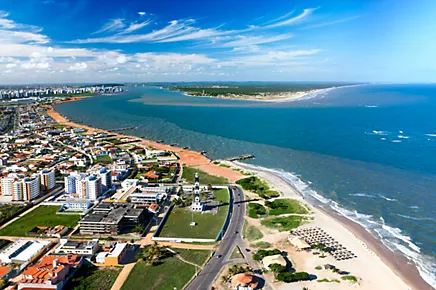

Seja bem vindo ao estado de Sergipe
Sergipe é o menor estado do Brasil, localizado na região Nordeste, mas mesmo sendo pequeno, é cheio de charme, história e belezas naturais. A capital, Aracaju, é uma cidade acolhedora, com praias lindas como a Praia de Atalaia, que é perfeita para relaxar, caminhar e aproveitar o sol. Sergipe também é conhecido por suas praias de água cristalina, como a Praia do Saco e a Praia de Aruana, que atraem turistas que buscam tranquilidade e beleza natural. Além das praias, o estado possui áreas de manguezais e rios, como o Rio Sergipe, que oferecem opções de passeios de barco e contato com a natureza. A cultura sergipana é vibrante, com festas tradicionais como o São João, que celebra as raízes nordestinas com música, dança e comidas típicas. A culinária local é deliciosa, destacando-se pratos como o caranguejo, a moqueca, a tapioca e o famoso bolo de rolo, que é uma especialidade regional. Sergipe também possui sítios arqueológicos e históricos, como o Museu da Gente Sergipana, que conta a história do povo local, e igrejas antigas que refletem sua herança colonial. Apesar de seu tamanho, Sergipe tem uma identidade forte, povo acolhedor e uma mistura de natureza, cultura e história que encanta quem visita. Se quiser saber mais, estou aqui para ajudar!

voltar